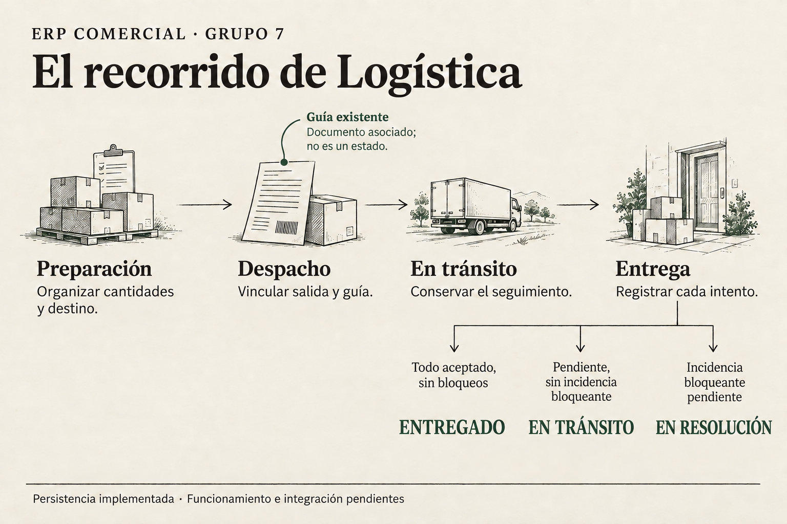
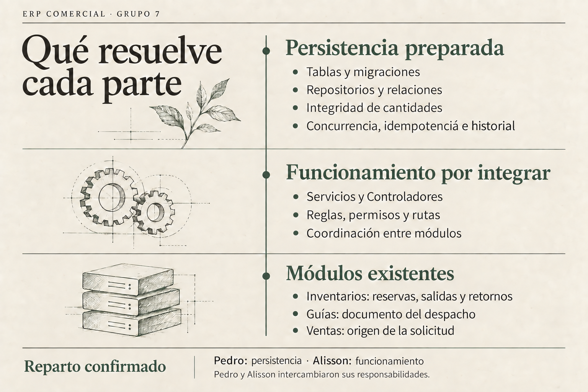
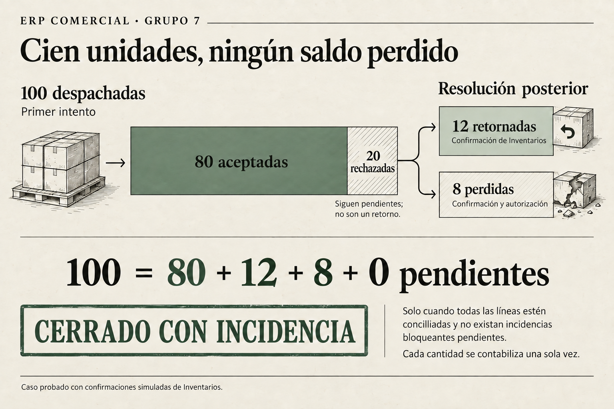
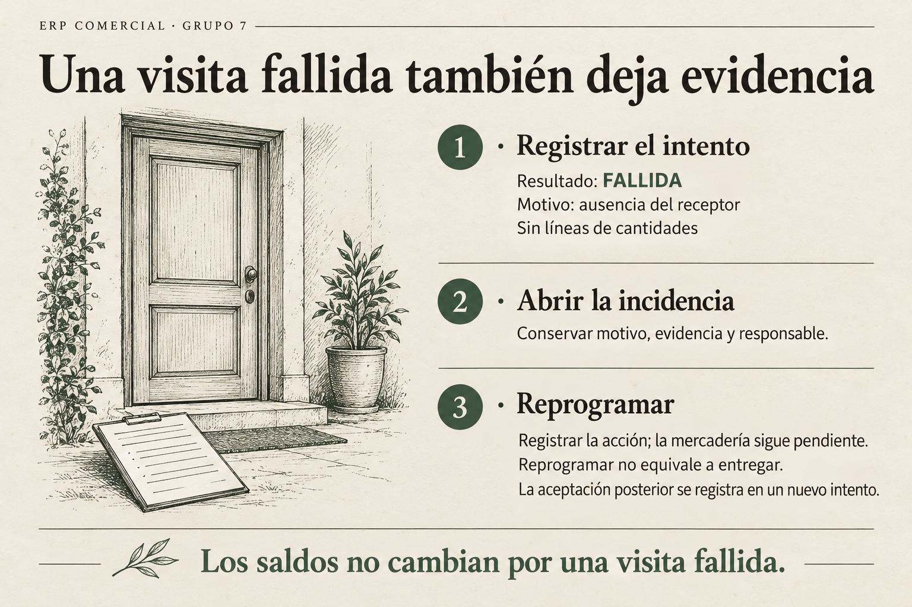
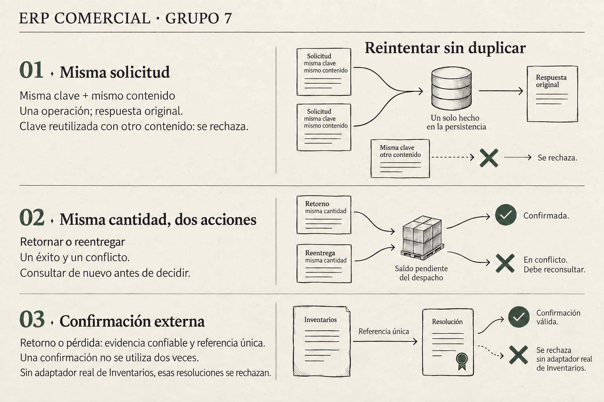
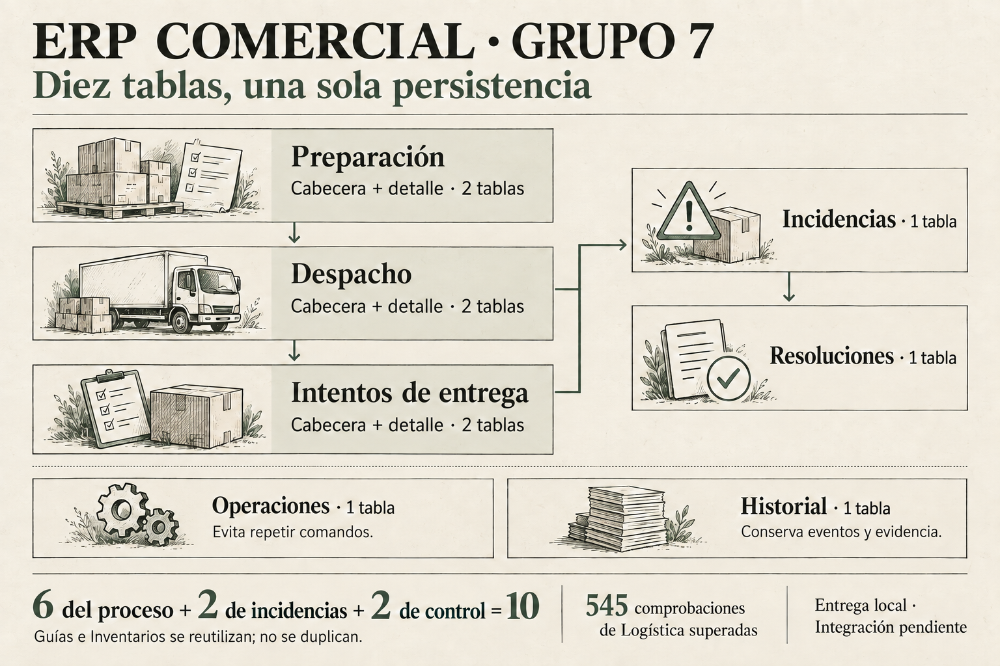

Seis láminas para entender qué se registra, cómo se resuelve una incidencia y qué protege la persistencia.
La persistencia está implementada y fue validada localmente. Los servicios, los controladores y la conexión con Inventarios real todavía requieren integración.
01
El recorrido logístico
La Guía acompaña al despacho como documento vinculado.

Una entrega parcial puede continuar en tránsito. Un asunto bloqueante lleva a resolución.Abrir imagenDescargar PNGExplicación y guion para exponer
El proceso relaciona preparación, despacho e intentos de entrega. La Guía se vincula y conserva su versión; se reutiliza el módulo existente y no se crea otro CRUD. «Entrega» representa una etapa del proceso, no un estado adicional llamado ENTREGA.
Una cantidad pendiente no basta para pasar a EN_RESOLUCION: sin asunto bloqueante, el despacho puede seguir EN_TRANSITO. Con una incidencia bloqueante pendiente se mantiene en resolución. El cierre exige cantidades conciliadas y ausencia de bloqueos pendientes.
Guion breve
«Primero organizamos la preparación y el despacho. Vinculamos la Guía que ya existe y registramos cada intento de entrega. Si quedan cantidades, conservamos el saldo. Cuando existe una incidencia bloqueante, tratamos el caso antes de cerrar.»
02
Cada responsabilidad en su lugar
Decidir una operación, guardarla y confirmar un movimiento son tareas distintas.

Logística conserva sus hechos y referencias. Inventarios conserva la responsabilidad del stock y el Kardex.Abrir imagenDescargar PNGExplicación y guion para exponer
Los Servicios y controladores atienden solicitudes, autorizan al actor y la sede, validan reglas, deciden acciones y coordinan otros módulos. La persistencia verifica identidad, relaciones, cantidades, versiones y condiciones de cierre, y guarda los cambios en transacciones.
Inventarios confirma los hechos físicos y sus movimientos. Logística no mantiene un stock paralelo ni descuenta otra vez el almacén al registrar una entrega o una pérdida. Falta el adaptador real de Inventarios y la coordinación de reservas y salidas. La aceptación de traslados está bloqueada hasta integrar la recepción confirmada del destino.
El reparto confirmado es Pedro: persistencia y Alisson: funcionamiento del módulo. La entrega se publica en feature/logistics-flow-pedro, según la indicación de Pedro.
Guion breve
«La parte de funcionamiento decide si una operación está permitida. La persistencia protege y guarda sus datos. Inventarios confirma movimientos de mercadería y Guías aporta el documento existente. Cada módulo conserva una responsabilidad clara.»
03
100 unidades, un balance verificable
Un rechazo abre un pendiente; el destino posterior se confirma por separado.

Caso probado con confirmaciones simuladas de Inventarios. El rechazo no acredita un retorno automático.Abrir imagenDescargar PNGExplicación y guion para exponer
Se despachan 100 unidades de una línea, producto, lote y unidad determinados. El cliente acepta 80 y rechaza 20. Se conserva el intento parcial y se abre un caso cuantitativo por esas 20. Si rechazo y daño afectan las mismas unidades, se agregan causas al mismo caso; no se asignan otras 20.
Tras el intento: 100 = 80 aceptadas + 0 retornadas + 0 finales + 20 pendientes. Tras resolver: 100 = 80 aceptadas + 12 retornadas + 8 pérdidas + 0 pendientes.
Las 12 retornadas requieren confirmación confiable de Inventarios. Las 8 pérdidas requieren confirmación, autorización y evidencia. Con todos los saldos en cero y sin incidencias bloqueantes pendientes, se solicita el cierre CERRADO_CON_INCIDENCIA. No corresponde ENTREGADO, porque no se aceptaron las 100.
Guion breve
«Las veinte rechazadas siguen siendo pendientes. Después confirmamos doce retornadas y ocho perdidas con autorización. Las cien quedan explicadas sin duplicar cantidades. Ese balance y la resolución de los bloqueos permiten cerrar con incidencia.»
04
Registrar una visita sin entrega
Un intento fallido documenta lo ocurrido sin inventar recepción ni cantidades.

FALLIDA es un resultado del intento. La ausencia registrada como incidencia bloqueante mantiene el despacho en resolución.Abrir imagenDescargar PNGExplicación y guion para exponer
Si no había receptor, se registra un intento con resultado FALLIDA, motivo, contexto y tipo AUSENCIA_RECEPTOR. Puede existir sin líneas y sin receptor; no se insertan cantidades cero para simular una entrega. La ausencia se registra como incidencia informativa bloqueante.
En este ejemplo, el balance continúa con 0 aceptadas y 100 pendientes. Esa incidencia no asigna cantidades a un caso cuantitativo. Reprogramar conserva una acción y su evidencia, sin acreditar aceptación, retorno ni pérdida. Un fallo documental necesita su propia causa; no debe registrarse como ausencia.
Guion breve
«Visitamos al cliente, pero no hubo receptor. Guardamos el intento y su causa sin inventar una entrega. Las cien unidades siguen pendientes. Podemos registrar la reprogramación; la aceptación solo se acredita cuando realmente ocurre.»
05
Repetir una solicitud no duplica un hecho
Idempotencia y concurrencia protegen el mismo balance desde dos frentes.

La misma solicitud incluye comando, datos, actor y contexto. Las pruebas verifican la persistencia local.Abrir imagenDescargar PNGExplicación y guion para exponer
La tabla técnica logistica_operaciones controla idempotencia por comando: una repetición exacta de una solicitud confirmada devuelve su resultado original, sin crear otro hecho. Usar su clave para otra solicitud provoca conflicto. No se activa un segundo deduplicador en las cabeceras.
Las versiones, bloqueos y transacciones protegen las cantidades frente a procesos simultáneos. En la prueba de retorno y aceptación posterior de las mismas 20 unidades, uno confirma y el otro recibe CONFLICT: queda una sola resolución y el balance continúa exacto. Una confirmación externa granular tampoco puede aplicarse dos veces con distintas claves.
La autorización sigue correspondiendo a los Servicios y controladores antes de una operación o repetición. Estas protecciones no sustituyen la integración y coordinación con los módulos externos.
Guion breve
«Si la conexión repite la misma solicitud, recuperamos el resultado que ya se guardó. Si dos procesos quieren resolver el mismo saldo, solo uno puede confirmar. Así evitamos duplicar despachos, resoluciones y cantidades.»
06
Diez tablas, un proceso trazable
Los hechos del negocio y los controles técnicos se relacionan sin confundirse.

Mapa conceptual, sin escala ni todas las claves foráneas. Incidencias y operaciones técnicas tienen objetivos distintos.Abrir imagenDescargar PNGExplicación y guion para exponer
Seis tablas conservan las cabeceras y detalles del proceso. Incidencias y resoluciones explican los problemas y su tratamiento. El historial conserva eventos, actores y referencias; operaciones controla repeticiones técnicas. Una tabla de operaciones no reemplaza el registro de incidencias físicas.
ENTREGADO acredita aceptación completa sin bloqueos. CERRADO_CON_INCIDENCIA acredita saldo conciliado con retorno o disposición, sin bloqueos pendientes. Un despacho final no se reabre mediante anulación ordinaria; correcciones con dependencias requieren otro proceso de compensación.
Se ejecutaron 545 comprobaciones de Logística correctas, además de las 27 suites originales. Esto acredita los casos probados en el entorno local de validación; no significa que el ERP esté listo para producción.
Guion breve
«Estas diez tablas forman una sola persistencia. Registran el proceso, explican las incidencias y protegen los datos. Ya validamos sus casos principales. Falta integrar el funcionamiento, Inventarios real y las compatibilidades del proyecto compartido.»